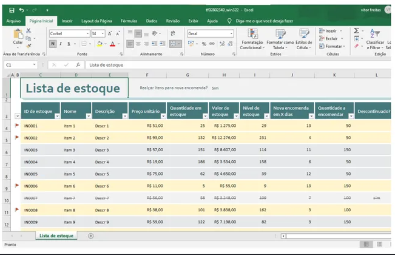
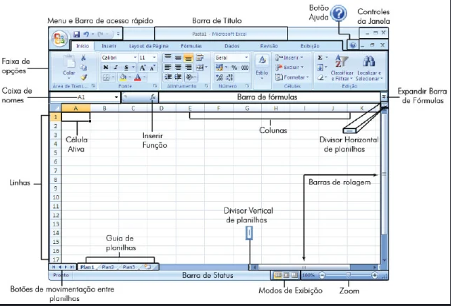
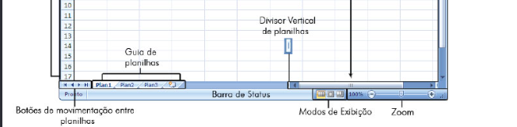
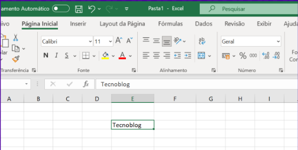
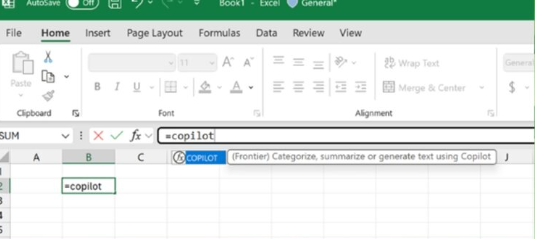
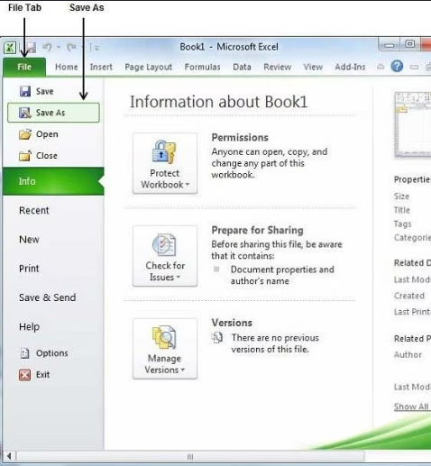

Introdução ao Excel, Interface, Tipos de Dados e Navegação
Nesta aula você vai aprender a usar o Microsoft Excel do zero: abrir o programa, entender cada parte da tela, digitar dados sem medo, editar com o teclado e salvar o seu trabalho. Você vai sair daqui com a planilha de compras funcionando — com o total de cada item calculado por você e o total geral automático — e com a certeza de saber a diferença entre uma planilha e uma pasta de trabalho.
Nada de voltar para cá no meio da aula: à medida que você avança, no fim de cada fase, no lugar exato da instrução, tem um check para marcar ao concluir. O próximo só é liberado depois que o anterior for finalizado.
Estes ajustes são o que faz o Excel responder bem durante a aula. Eles são rápidos — o primeiro check (no fim do Tópico 1) só abre depois que você os fez:
- Abra o Microsoft Excel em uma pasta de trabalho em branco (Plan1) e deixe a janela maximizada.
- Confira se as Faixas de Opções (Arquivo, Página Inicial, Inserir, Fórmulas, Dados) estão visíveis no topo da janela.
- Se alguma faixa sumiu: Arquivo → Opções → Faixa de Opções e marque as abas que quiser de volta.
1.1 O que é o Microsoft Excel e Suas Aplicações no Dia a Dia
O Microsoft Excel é um programa de planilha eletrônica desenvolvido para organizar informações em tabelas virtuais, realizar cálculos matemáticos automáticos, analisar dados e criar gráficos profissionais.
Antes do surgimento dos computadores, a contabilidade e os controles financeiros eram feitos manualmente em grandes cadernos de papel milimetrado. Qualquer alteração exigia apagar e recalcular todas as somas à mão. Lançado originalmente em 1985, o Excel revolucionou o mundo do trabalho ao fazer com que o computador recalcule instantaneamente milhares de valores.

💡 Para que serve o Excel no cotidiano?
- Controle de Orçamento Doméstico: Registrar receitas, contas de luz, água e supermercado com soma automática.
- Controle de Estoque de Loja: Saber exatamente a quantidade de mercadorias disponíveis e quando repor.
- Boletim Escolar & Notas: Calcular médias aritméticas de alunos e indicar quem foi aprovado ou reprovado.
- Folha de Pagamento: Calcular salários brutos, descontos de INSS/impostos e salário líquido.
- Emissão de Gráficos: Transformar números brutos em relatórios visuais de pizza, barras ou linhas.
Cite 3 aplicações do Excel no dia a dia (ex.: controle de gastos, estoque, folha de pagamento) e explique por que todas elas misturam linhas, colunas e cálculos automáticos. Marque ao concluir → libera o passo 2.
1.2 Anatomia da Interface do Excel e Elementos Principais
Ao abrir o Microsoft Excel, somos apresentados a uma janela organizada com elementos específicos para o manuseio de planilhas. Compreender cada parte da interface é o primeiro passo para dominar o programa.
📌 1. Barra de Título
Fica no topo da tela e exibe o nome do arquivo atualmente aberto (ex: Pasta1.xlsx) e o nome do programa.
📌 2. Faixa de Opções (Ribbon)
Menu superior com abas (Página Inicial, Inserir, Fórmulas, Dados) que agrupam todos os botões e ferramentas.
📌 3. Caixa de Nome
Mostra a coordenada exata da célula selecionada no momento (ex: A1, B5, C10).
📌 4. Barra de Fórmulas
Espaço onde digitamos e visualizamos o conteúdo real ou a fórmula por trás de uma célula (ex: =SOMA(B2:B10)).
📌 5. Grade de Células (Sheet Grid)
A grande área de trabalho quadriculada. Colunas são identificadas por LETRAS (A, B, C...) e Linhas por NÚMEROS (1, 2, 3...).
📌 6. Barra de Status
Fica no rodapé da janela e mostra a soma, média e contagem rápida dos números selecionados sem precisar fazer fórmulas.

Clique na célula A1 e aponte na tela a Barra de Título, a Faixa de Opções, a Caixa de Nome, a Barra de Fórmulas, a Grade e a Barra de Status — dizendo o que cada uma serve. Marque ao concluir → libera o passo 3.
1.3 Diferença entre Planilhas (Abas) e Pastas de Trabalho
Uma das dúvidas mais comuns de quem está começando no Excel é a diferença entre os termos Pasta de Trabalho e Planilha.
📘 Pasta de Trabalho (Workbook)
É o ARQUIVO COMPLETO salvo no seu computador ou pen drive (com extensão .xlsx).
Analogia didática: Pense na Pasta de Trabalho como se fosse um CADERNO DE ANOTAÇÕES ENCADERNADO.
📑 Planilha (Worksheet / Tab)
É uma ABA INDIVIDUAL de trabalho localizada na parte inferior da tela (ex: Plan1, Vendas_Jan, Resumo).
Analogia didática: Pense na Planilha como as PÁGINAS/FOLHAS INDIVIDUAIS de papel dentro desse caderno. Um único arquivo pode conter dezenas de planilhas.

Clique com o botão direito na aba Plan1 → Renomear e digite Compras. Depois explique com suas palavras por que uma aba é a planilha e o arquivo .xlsx é a pasta de trabalho. Marque ao concluir → libera o passo 4.
1.4 Tipos de Dados e Alinhamento Automático no Excel
Tudo o que você digita em uma célula do Excel é classificado pelo programa em um tipo de dado. Saber distinguir esses tipos é a base mais importante do Excel, porque eles definem o que dá para fazer com aquele valor (somar, comparar, formatar) e como a célula se alinha na grade.
A primeira grande regra é o alinhamento automático: valores numéricos e datas ficam alinhados à direita; textos ficam alinhados à esquerda. Se você digitar um número e ele ficar alinhado à esquerda, é sinal de que o Excel o tratou como texto — e aí ele não poderá ser somado.
⚠️ O caso clássico do "número que não soma"
Quando um número é digitado com um apóstrofo antes ('123) ou quando foi copiado como texto, o Excel passa a tratá-lo como rótulo. O sinal: ele fica alinhado à esquerda e aparece um pequeno triângulo verde no canto da célula. Nesse caso, uma soma simplesmente ignora esse valor. A correção é selecionar a célula e usar o botão de aviso para "Converter em Número".
📌 Como o Excel decide: a Caixa de Nome + Barra de Fórmulas
A Caixa de Nome (canto superior esquerdo) mostra a coordenada da célula selecionada (ex.: B3). A Barra de Fórmulas mostra o que está realmente gravado na célula. Se a célula tem uma fórmula, o resultado aparece na grade, mas a fórmula aparece na Barra de Fórmulas. Sempre que uma célula não fizer sentido, olhe para a Barra de Fórmulas.

🖥️ Simulador Interativo — Grid Inspector (Grade do Excel)
Simulador AtivoClique nas células da grade para inspecionar a coordenada na Caixa de Nome ou digite valores abaixo para ver o Excel alinhar automaticamente!
| # | A | B | C | D | E | F |
|---|---|---|---|---|---|---|
| 1 | Produto | Preço | Qtd | |||
| 2 | Notebook | 3500.00 | 2 | |||
| 3 | Mouse Sem Fio | 85.50 | 5 | |||
| 4 | Teclado USB | 120.00 | 3 |
Digite Caneta (texto), 12,00 (número) e 15/06/2025 (data) em três células. Observe o alinhamento automático de cada um e diga por que um número alinhado à esquerda não pode ser somado. Marque ao concluir → libera o passo 5.
1.5 Inserção, Edição de Célula (F2) e Atalhos de Navegação
No Excel, a navegação ágil pelo teclado economiza tempo precioso. Aprender a confirmar a digitação e editar células sem apagar seu conteúdo original é essencial.
⌨️ Teclas de Confirmação de Entrada
- Enter: Confirma a digitação e move o cursor para a CÉLULA DE BAIXO.
- Tab: Confirma a digitação e move o cursor para a CÉLULA DA DIREITA.
- Shift + Enter: Confirma e move o cursor para a CÉLULA DE CIMA.
- Shift + Tab: Confirma e move o cursor para a CÉLULA DA ESQUERDA.
⚡ O Segredo da Tecla F2 (Editar Célula)
Se você clicar em uma célula preenchida e simplesmente começar a digitar uma nova palavra, o Excel APAGARÁ TUDO o que já estava lá!
Para modificar apenas uma parte do texto sem apagar nada: selecione a célula e pressione a tecla F2 do teclado. O cursor de texto piscará dentro da célula permitindo fazer edições pontuais.

🚀 Atalhos de Navegação Rápida
- Ctrl + Setas de Direção (↑ ↓ ← →): Salta instantaneamente para a última célula preenchida daquela linha ou coluna.
- Ctrl + Home: Salta diretamente para a primeira célula da planilha (Célula
A1). - Esc: Cancela qualquer digitação em andamento e restaura o valor original da célula.
Clique numa célula preenchida e digite por cima: o Excel apaga tudo. Agora pressione F2, corrija somente uma letra e pressione Esc para restaurar. Volte ao topo com Ctrl+Home e desça com Ctrl+↑/↓. Marque ao concluir → libera o passo 6.
1.6 Salvando Pastas de Trabalho (.xlsx vs .csv)
Após criar ou alterar uma planilha no Excel, é indispensável salvar o arquivo para não perder suas informações.
💾 Como Salvar uma Pasta de Trabalho
- Pressione a combinação de teclas Ctrl + S (ou clique no ícone de disquete no canto superior esquerdo).
- Escolha a pasta do computador onde deseja guardar o arquivo (ex: Documentos ou Área de Trabalho).
- Digite um nome claro para o arquivo (ex:
Controle_Financeiro_2026) e clique em Salvar.
📁 Principais Formatos de Arquivo do Excel
- .xlsx (Pasta de Trabalho do Excel): O formato padrão oficial. Preserva todas as fórmulas, cores, gráficos, formatações e múltiplas abas.
- .csv (Valores Separados por Vírgulas): Arquivo de texto simples usado para importar ou exportar dados entre sistemas bancários e softwares de gestão. Não guarda cores nem fórmulas.
- .pdf (Documento PDF): Formato estático ideal para enviar relatórios por e-mail ou WhatsApp sem que o destinatário possa alterar os números.

Pressione Ctrl+S e salve como Controle_Financeiro_2026.xlsx. Diga a diferença: .xlsx preserva fórmulas e formatação; .csv grava só texto separado por vírgula (nada de fórmulas). Marque ao concluir → libera o passo 7.
1.7 Introdução aos Operadores Básicos e à Função SOMA
Antes de avançarmos, vamos entender os operadores matemáticos que o Excel usa para calcular. Eles funcionam como as teclas de uma calculadora — mas dentro de uma célula, e sempre começando com o sinal de igual (=).
🧮 A ordem: multiplicação/divisão vencem soma/subtração
Assim como na matemática escolar, o Excel calcula primeiro multiplicações e divisões, e depois somas e subtrações. Para forçar uma conta a ser feita primeiro, usamos parênteses. Exemplo: = (75 + 25) * 2 resulta em 200 — porque os parênteses somam 75+25 (100) antes de multiplicar por 2.
Para fixar, veja abaixo uma planilha de exemplo com 5 linhas de compras, com o total calculado por fórmula em cada linha:
➡️ O que vira "FUNÇÃO" na Aula 02
Repare que na planilha acima cada linha usa uma fórmula digitada à mão. Na Aula 02 você vai conhecer a função SOMA(), que é uma fórmula pronta do Excel: em vez de digitar =B2+B3+B4, você escreve =SOMA(B2:B4) e o Excel soma todo o intervalo sozinho. Fórmulas digitadas e funções prontas são as duas grandes ferramentas de cálculo do Excel.
🧾 ATIVIDADE PRÁTICA — Sua Planilha de Controle de Gastos Pessoais
Agora é com você! Vamos criar no Excel real a SUA planilha de controle de gastos pessoais, usando os operadores básicos e a função =SOMA(). Siga o passo a passo:
- Abra o Excel e crie uma planilha em branco.
- Na célula
A1, digite o título: CONTROLE DE GASTOS PESSOAIS. - Na linha 2, digite os cabeçalhos: em
A2→Descrição,B2→Categoria,C2→Valor,D2→Qtd,E2→Subtotal. - Nas linhas 3 a 7, digite 5 despesas suas (ex.: Aluguel, Mercado, Transporte, Lazer, Internet), com categoria, valor e quantidade.
- Na célula
E3, calcule o subtotal da 1ª despesa com o operador de multiplicação*:=C3*D3(valor × quantidade). - Use a Alça de Preenchimento para copiar o subtotal de
E3atéE7(arraste o cantinho inferior direito da célula). - Na célula
E8, some todas as despesas com a função=SOMA():=SOMA(E3:E7)→ total dos seus gastos. - Na célula
B10, digiteMeu Salárioe emC10digite o valor do seu salário. - Na célula
C11, calcule o que sobra com o operador de subtração-:=C10-E8. Se o resultado for positivo, você está no azul! 😉 Se der negativo, é hora de economizar. - Bônus ÷ e %: divida a conta da internet com um amigo em
C12→=C7/2(divisão/); e guarde 10% na poupança emC13→=C11*10%(porcentagem%).
💡 Dica do Professor: o operador de adição + está embutido na função =SOMA() — digitá-la é o mesmo que escrever =E3+E4+E5+E6+E7. Com a função, o trabalho é menor e o resultado é o mesmo.
Monte a planilha de compras com Item, Preço, Qtd e Desconto; em E2 use
=B2*C2*(1-D2) e arraste até a última linha. Depois totalize com =SOMA(E2:E6) e teste a ordem dos operadores com =(75+25)*2. Marque ao concluir → este é o último passo da aula.